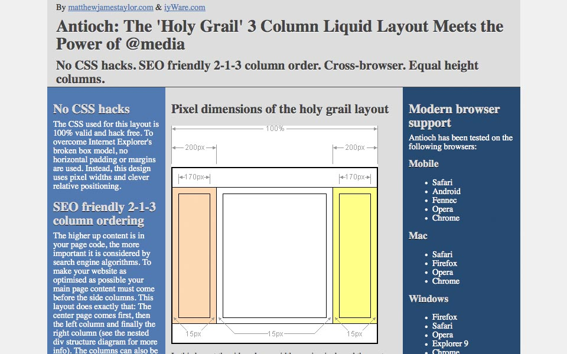
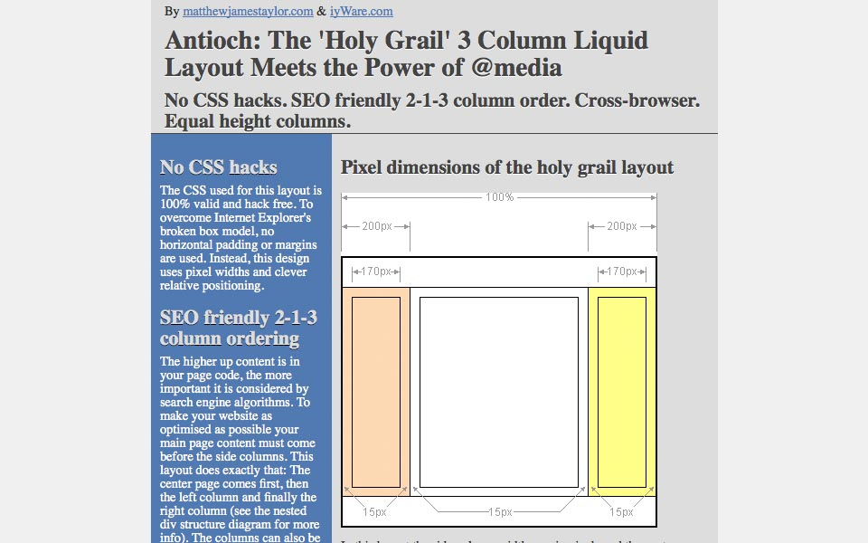
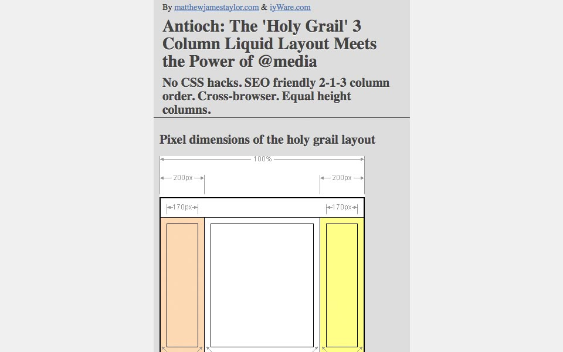

Antioch
 Danny Wahl
•
•
Danny Wahl
•
•
Chances are if you want a 3 column layout you’re going to choose one of Matthew James Taylor’s Multi-Column Liquid Layouts. And for good reason: they’re semantic, cross-browser compatible, and easy to use. And now they’re responsive.
Features
-Antioch uses a custom-built page layout with a responsive design - Media queries serve a 1, 2, or 3 column layout at user definable widths - A 2-1-3 layout order means your important content is always first - Built on the H5BP “Mobile first” design principles - HTML5 doctype and elements bring this classic layout into the present - Compatible with Respond.js to provide additional support for older browsers
Gallery



Download
This layout is available for download from github.
Documentation & Support
Support for this layout is provided at the github issue tracker.